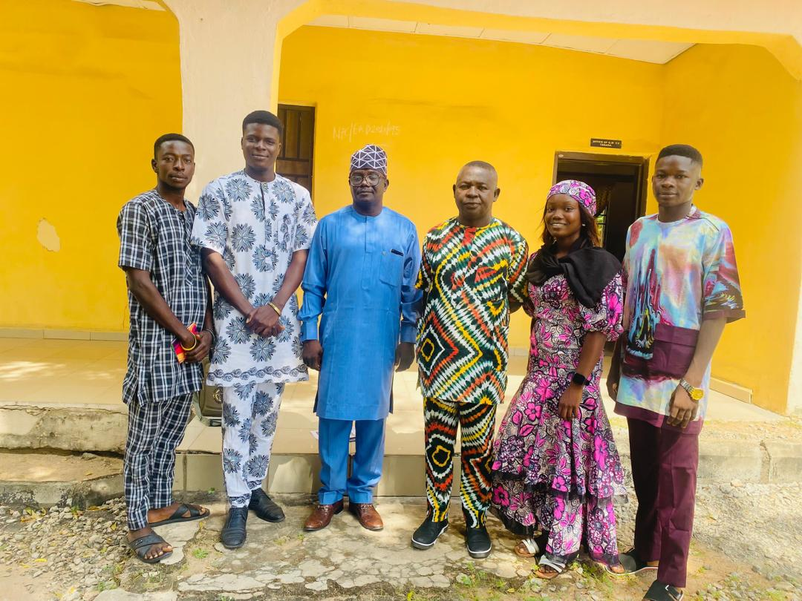

In a significant stride toward fostering community engagement and amplifying outreach efforts, the Luminary Outreach Foundation (LOF) team recently visited the Taraba Television Corporation (TTC). This visit marked a pivotal moment in the foundation’s mission to expand its reach and impact within the Taraba community. The meeting was characterized by a warm, friendly, and productive discussion, laying the groundwork for a promising partnership aimed at addressing critical social issues and promoting sustainable development.
The LOF team began the visit by introducing themselves and outlining the foundation’s core objectives, programs, and ongoing initiatives. The team emphasized their commitment to improving the lives of underserved communities through education, healthcare, and empowerment programs. They also highlighted the importance of media collaboration in raising awareness and mobilizing resources to support these initiatives. The Taraba Television Corporation, a key media outlet in the region, expressed keen interest in the foundation’s work and recognized the potential for a mutually beneficial partnership.
During the discussions, Taraba Television Corporation demonstrated a strong willingness to collaborate with Luminary Outreach Foundation. They agreed to support LOF’s mission by advertising its programs on their platform, ensuring that the foundation’s initiatives reach a wider audience. This partnership will not only enhance visibility for LOF’s projects but also encourage community participation and support. Additionally, TTC pledged to feature LOF on their talk shows, providing a platform to discuss pressing social issues, share success stories, and inspire collective action. This media exposure is expected to significantly boost the foundation’s efforts to engage stakeholders and attract potential donors and volunteers.
Beyond media support, Taraba Television Corporation also committed to actively participating in LOF’s outreach programs. They expressed their readiness to provide logistical and promotional support for any community-based initiatives undertaken by the foundation. This collaborative approach underscores the importance of partnerships in driving meaningful change and addressing the multifaceted challenges faced by communities in Taraba State. By leveraging the strengths and resources of both organizations, this alliance has the potential to create a lasting impact on the lives of countless individuals.
The meeting concluded on a high note, with both parties expressing optimism about the future of their collaboration. To commemorate the occasion, the LOF team and members of the Taraba Television Corporation took photographs together, symbolizing the beginning of a strong and enduring partnership. These images serve as a testament to the shared commitment of both organizations to work hand-in-hand for the betterment of the community.
This visit to Taraba Television Corporation is a testament to Luminary Outreach Foundation’s dedication to building strategic alliances that amplify its impact. By partnering with a reputable media organization like TTC, LOF is poised to reach new heights in its mission to empower communities and drive sustainable development. The foundation’s proactive approach to collaboration reflects its understanding of the power of collective action in addressing complex social challenges.
The LOF team’s visit to Taraba Television Corporation was not only a success but also a significant milestone in the foundation’s journey. The partnership promises to enhance the visibility of LOF’s programs, foster community engagement, and mobilize support for its initiatives. As both organizations join forces, the future looks brighter for the people of Taraba State, with the promise of transformative change on the horizon. This collaboration serves as a reminder that when organizations come together with a shared vision, the possibilities for positive impact are limitless.
